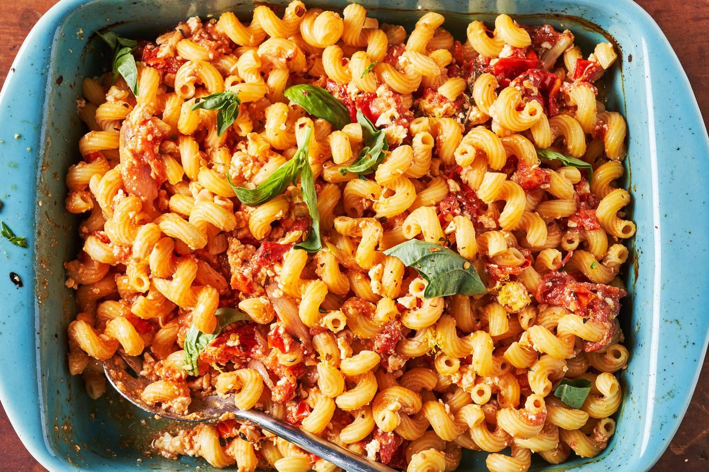

Baked Feta Pasta

Description
This simple recipe is quick and delicious. Who doesn't love a whole block of feta roasted with bursting tomatoes?
Ingredients
- 2 pt. cherry or graph tomatoes
- 1 shallot, quartered
- 3 cloves garlic, smashed (optional)
- ½ c. extra virgin olive oil, divided
- Kosher salt
- Crushed red pepper flakes
- 1 (8-oz.) block feta
- 3 sprigs thyme
- 10 oz. pasta
- Zest of 1 lemon (optional)
Steps
- Preheat oven to 400°. In a large ovenproof skillet or medium baking dish, combine tomatoes, shallot, garlic, and most of the olive oil. Season with salt and red pepper flakes and toss to combine.
- Place feta into center of tomato mixture and drizzle top with remaining olive oil. Scatter thyme over tomatoes. Bake for 40 to 45 minutes, until tomatoes are bursting and feta is golden on top.
- Meanwhile, in a large pot of salted boiling water, cook pasta according to package instructions. Reserve ½ cup pasta water before draining.
- To skillet with tomatoes and feta, add cooked pasta, reserved pasta water, and lemon zest (if using) to skillet and stir until completely combined. Garnish with basil before serving.